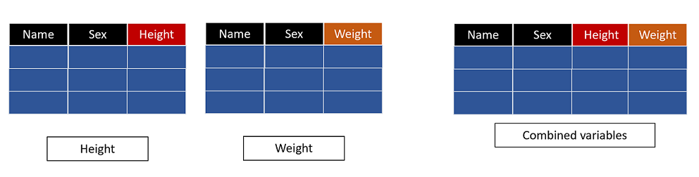

*Copyright @ www.mycsg.in;
What is the word meaning of merge
Combine to form a single entity.
Merging data to pull variables from a dataset
Merging data to pull variables from a dataset

Common scenarios where merging is required
Presenting height and weight of students on a single observation when height and weight are stored in different datasets
Presenting height, weight, and sex of students on a single observation when those values are stored in three different datasets
Presenting treatment start date beside adverse event start date to check whether the event happened after treatment started
Joining subject-level information with visit-level or event-level information based on a common key
What does the MERGE statement do in a DATA step
The `merge` statement combines observations from two or more datasets into one output observation
When a `by` statement is used, SAS performs a match merge based on the common BY variables
For match merging, the input datasets must be sorted by the same BY variables before the merge step runs
What is match merging in SAS
Match merging means combining rows from multiple datasets based on the values of one or more common variables
The common variables are listed in the `by` statement
Observations with the same BY value are aligned into one output observation
Create sample datasets
We split `sashelp.class` into separate datasets so that each dataset contains a different variable of interest
This makes the effect of the merge easy to understand because each input dataset contributes one piece of information
data height(keep=name height) weight(keep=name weight) sex(keep=name sex) age(keep=name age); set sashelp.class; run;
Copy Code
View Log
SAS Log
data height(keep=name height) weight(keep=name weight) sex(keep=name sex) age(keep=name age); set sashelp.class; run; NOTE: There were 19 observations read from the data set SASHELP.CLASS. NOTE: The data set WORK.HEIGHT has 19 observations and 2 variables. NOTE: The data set WORK.WEIGHT has 19 observations and 2 variables. NOTE: The data set WORK.SEX has 19 observations and 2 variables. NOTE: The data set WORK.AGE has 19 observations and 2 variables. NOTE: DATA statement used (Total process time): real time 0.01 seconds cpu time 0.01 seconds
Each dataset now contains `name` plus one additional variable
`name` will act as the common key in the examples below
View Data
Dataset View
One to one match merging
Create a dataset named heightweight by merging height and weight datasets based on name
Before match merging, we sort each input dataset by the common variable `name`
The `merge` statement lists the datasets to be joined
The `by name;` statement tells SAS how to align observations across the input datasets
The output dataset `heightweight` should contain one row per student with both `height` and `weight`
proc sort data=height; by name; run; proc sort data=weight; by name; run; data heightweight; merge height weight; by name; run;
Copy Code
View Log
SAS Log
proc sort data=height; by name; run; NOTE: There were 19 observations read from the data set WORK.HEIGHT. NOTE: The data set WORK.HEIGHT has 19 observations and 2 variables. NOTE: PROCEDURE SORT used (Total process time): real time 0.00 seconds cpu time 0.00 seconds proc sort data=weight; by name; run; NOTE: There were 19 observations read from the data set WORK.WEIGHT. NOTE: The data set WORK.WEIGHT has 19 observations and 2 variables. NOTE: PROCEDURE SORT used (Total process time): real time 0.00 seconds cpu time 0.00 seconds data heightweight; merge height weight; by name; run; NOTE: There were 19 observations read from the data set WORK.HEIGHT. NOTE: There were 19 observations read from the data set WORK.WEIGHT. NOTE: The data set WORK.HEIGHTWEIGHT has 19 observations and 3 variables. NOTE: DATA statement used (Total process time): real time 0.00 seconds cpu time 0.00 seconds
Inspect `heightweight` and confirm that the values of height and weight for the same student now appear on one row
This is the basic match merge pattern used throughout SAS programming
View Data
Dataset View
Create a dataset named hws by merging height, weight, and sex datasets based on name
The same pattern can be extended to more than two input datasets
Each input dataset must still be sorted by the same BY variable
The output dataset now combines three different pieces of information for each student
proc sort data=height; by name; run; proc sort data=weight; by name; run; proc sort data=sex; by name; run; data hws; merge height weight sex; by name; run;
Copy Code
View Log
SAS Log
proc sort data=height; by name; run; NOTE: Input data set is already sorted, no sorting done. NOTE: PROCEDURE SORT used (Total process time): real time 0.00 seconds cpu time 0.00 seconds proc sort data=weight; by name; run; NOTE: Input data set is already sorted, no sorting done. NOTE: PROCEDURE SORT used (Total process time): real time 0.00 seconds cpu time 0.00 seconds proc sort data=sex; by name; run; NOTE: There were 19 observations read from the data set WORK.SEX. NOTE: The data set WORK.SEX has 19 observations and 2 variables. NOTE: PROCEDURE SORT used (Total process time): real time 0.01 seconds cpu time 0.00 seconds data hws; merge height weight sex; by name; run; NOTE: There were 19 observations read from the data set WORK.HEIGHT. NOTE: There were 19 observations read from the data set WORK.WEIGHT. NOTE: There were 19 observations read from the data set WORK.SEX. NOTE: The data set WORK.HWS has 19 observations and 4 variables. NOTE: DATA statement used (Total process time): real time 0.00 seconds cpu time 0.01 seconds
Review `hws` and confirm that height, weight, and sex now appear together for each student
View Data
Dataset View
Create a dataset named ahws by merging age, height, weight, and sex datasets based on name
This example adds a fourth dataset to the same match merge pattern
The result is a combined dataset with one row per student and four merged variables
proc sort data=age; by name; run; proc sort data=height; by name; run; proc sort data=weight; by name; run; proc sort data=sex; by name; run; data ahws; merge age height weight sex; by name; run;
Copy Code
View Log
SAS Log
proc sort data=age; by name; run; NOTE: There were 19 observations read from the data set WORK.AGE. NOTE: The data set WORK.AGE has 19 observations and 2 variables. NOTE: PROCEDURE SORT used (Total process time): real time 0.01 seconds cpu time 0.00 seconds proc sort data=height; by name; run; NOTE: Input data set is already sorted, no sorting done. NOTE: PROCEDURE SORT used (Total process time): real time 0.00 seconds cpu time 0.00 seconds proc sort data=weight; by name; run; NOTE: Input data set is already sorted, no sorting done. NOTE: PROCEDURE SORT used (Total process time): real time 0.00 seconds cpu time 0.00 seconds proc sort data=sex; by name; run; NOTE: Input data set is already sorted, no sorting done. NOTE: PROCEDURE SORT used (Total process time): real time 0.00 seconds cpu time 0.00 seconds data ahws; merge age height weight sex; by name; run; NOTE: There were 19 observations read from the data set WORK.AGE. NOTE: There were 19 observations read from the data set WORK.HEIGHT. NOTE: There were 19 observations read from the data set WORK.WEIGHT. NOTE: There were 19 observations read from the data set WORK.SEX. NOTE: The data set WORK.AHWS has 19 observations and 5 variables. NOTE: DATA statement used (Total process time): real time 0.01 seconds cpu time 0.00 seconds
Inspect `ahws` and confirm that each student has age, height, weight, and sex on the same observation
Notice how match merge lets multiple narrow datasets be assembled into one wider dataset
View Data
Dataset View
Important point to remember about sorting before merging
For a BY merge, SAS expects all input datasets to be sorted by the same BY variables
If the datasets are not sorted correctly, SAS can stop with an error or produce incorrect alignment
A safe habit is to sort every input dataset immediately before the merge when teaching or debugging code
Key points to remember
The `merge` statement joins observations from multiple datasets
A match merge uses one or more common BY variables to align rows
All input datasets should be sorted by the same BY variables before the merge
The output dataset contains variables contributed by all merged datasets